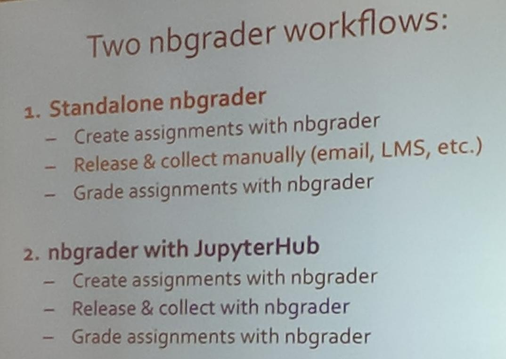

5 Things I learned at SciPy2017!
So I'm at SciPy2017 (I had a talk on ReproZip accepted - slides) and I learned about some amazing open source tools for research! This year, SciPy 2017 was in Austin, Texas from July 10-16, 2017. It was the 16th annual Scientific Computing with Python Conference, and focused on great new tools and methods for research with Python.
These are my top 5 favorite takeaways from SciPy 2017!
- SciSheets: Anyone who knows me knows that I really can't stand Excel. It encodes your data weirdly and is such a black box it causes more errors in research than it ever helps analysis. This is why I was pumped to see a session on building a better spreadsheet - one that combines programming with the simplicity of spreadsheets. SciSheets is a web application that allows users to run Python expressions or scripts in a spreadsheet, but also export spreadsheets to a standalone Python program! You can find a demo video here!
- nbgrader: This is a phenomenal application for assignment management and grading in Jupyter notebooks. The nbgrader extension for Jupyter notebooks guides the instructor through assignment and grading tasks using the familiar Jupyter notebook interface. It's made up of a few Jupyter Notebook extensions. The formgrader extension allows instructors to use functionality from nbgrader to generate student versions of assignments (including releasing to students), collecting assignments, and auto and manual grading submissions. Students just work in the notebook and submit! You can read more at the GitHub repo. 
- Dataflow: This extension to Jupyter Notebooks answers the question, "how can a notebook be structured so rewriting isn't necessary?" and "how can cells in a notebook be linked more robustly?" Their solution was to make cell IDs persistent, similarly to UUIDs. This allows users to powerfully reference previous outputs. You see the slides from SciPy here.
- The Journal of Open Source Software: Ok, I didn't just learn about JOSS (I have a paper there!) but it's still one of my favorite things. It's an open source journal for software. Developers just have to write a short essay (2 paragraph markdown file with some references and an image) and have their code available for review on GitHub. The reviewers look at the source code and test it out before acceptance. From their website: "The Journal of Open Source Software (JOSS) is an academic journal with a formal peer review process that is designed to improve the quality of the software submitted." It's a great way for developers in academia to get their work reviewed, and get credit for their excellent software.
- Elegant SciPy book: Written by Juan Nunez-Iglesias (@jni), Harriet Dashnow (@hdashnow), and Stéfan van der Walt (@stefanv), and published by O'Reilly Media, this fully free and open book focuses on the foundations of scientific python. You can download the book from the GitHub repository as Markdown or an executable Jupyter Notebook. Great work done on opening the book in a machine readable and executable format!!
nbgrader workflow from presentation at SciPy 2017